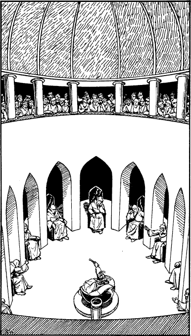

300
The great flagstoned precinct at the entrance to the Anarium is packed with hundreds of people. Senate officials, soldiers, and citizens crowd the steps that give access to the grand foyer and outer chambers of the hall. You notice that a side entrance is being used exclusively by army scouts who arrive with dispatches and leave with orders for the lookouts hidden in the surrounding hills. You take a calculated gamble and order the carriage driver to draw up at the side entrance. This bold move pays off; upon seeing your presidential scroll not only do the guards allow you into the Anarium, but you are escorted to the Appellant’s Gallery inside the assembly hall itself.

From your seat in the gallery you stare down at an oval hall, ringed by twelve arches beneath which the senators of Anari sit upon their throne-like chairs of lacquered oak. President Toltuda occupies a seat in the centre of the hall and presides over a heated discussion that is raging back and forth. Having heard all sides of the argument he calls for a vote, and the issue is decided by a show of hands.
‘We now come to a quite extraordinary matter, which has been raised by one of our most eminent citizens,’ says President Toltuda, introducing your appeal to the Senate. He turns to the gallery and calls out, ‘Sommlending Lord, Lone Wolf, please make yourself known to the assembly.’
You rise from your seat and bow to the senators. ‘Please present your request to us, Lone Wolf,’ says the President, and a hush descends on the hall as you explain the purpose of your journey to Tahou. When you have finished, the President calls upon the senators to speak.
‘I say we should help the Sommlending,’ pipes the shrill voice of Senator Zilaris. ‘If he finds the Lorestone, its power could turn the tide and save Tahou from the clutches of Darklord Gnaag.’ A murmur of agreement stirs in the hall.
‘And I say we should refuse to open the Cauldron,’ booms the powerful voice of Senator Chil. ‘I say that if it were not for his presence in our city, we would be spared the attention of the Darklords. He is the object of their anger and spite. I say we should give him to them, and in doing so we will save our city, our country, our people, and ourselves!’ A surge of support echoes from the arches, and your skin prickles at the thought of what could happen. President Toltuda calls for a vote to decide whether the Senate should allow you to enter the Cauldron, or use you to bargain for peace with the Darklords.
Tensely you await the result. The votes are cast and counted and the Senate is split evenly: six votes for you and six votes against. The decision now rests with the President himself. He must cast the deciding vote.
Pick a number from the Random Number Table.
If the number you have picked is 0–4, turn to 58.
If the number is 5–9, turn to 137.